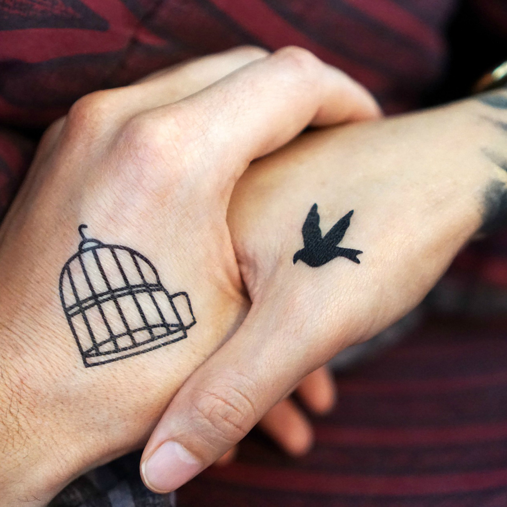
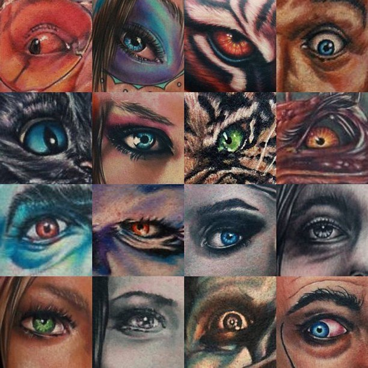
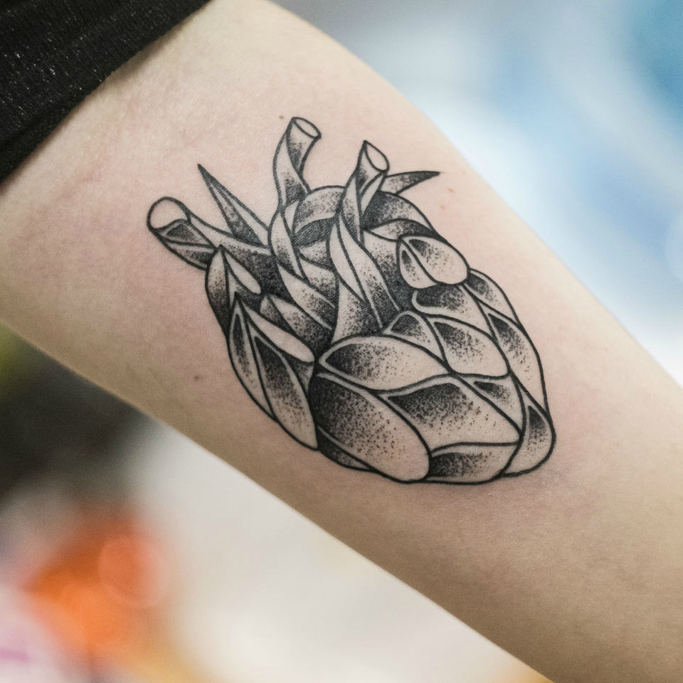
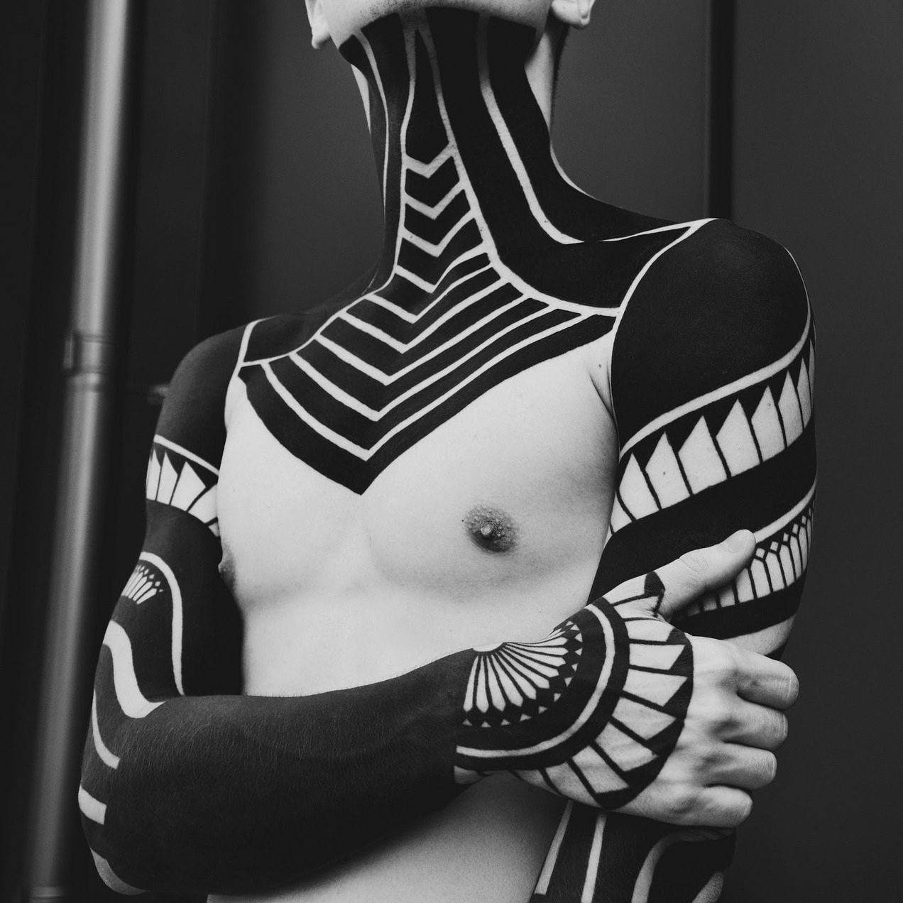

Минимализм
Это лаконичный стиль, который берет своей простотой и элегантностью композиции.
Реализм
Стиль, отличающийся максимально реалистичной и точной картинкой.

Олд скул
Это популярный стиль татуировок среди моряков, существовавший в Европе и Америке в 19 веке.
Нью скул
Яркие изображения, обрамленные четким и жирным контуром. Имеют сходство с граффити.


Дотворк
Татуировка, состоящая из точек, складывающихся в определенный рисунок.
Блэкворк
Нанесение на обширные участки тела черной краски.